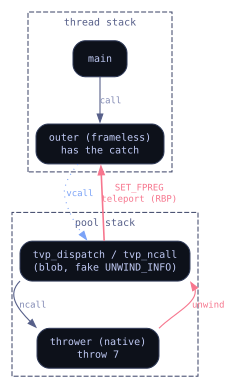

TVP virtualizes functions. It lifts a function's machine code into bytecode and runs that bytecode in an interpreter baked into the target binary. A virtualized function can still call back out to ordinary native code, and that native code can throw a C++ exception, and when it does the exception has to unwind back through the interpreter and find the original caller's catch. Getting that to work at all took a while.
The short version, because the story needs it: the interpreter and its call-out trampolines live in a blob I inject into the host image, and that blob has no .pdata. So when an exception unwinds into it, RtlLookupFunctionEntry returns NULL, Windows applies the leaf-function rule - RIP = [RSP]; RSP += 8 - to a slot that is not a return address, and the unwind walks off a cliff. I have a Frida trace where it eventually treats the exception code itself, 0x20474343, as a return address and jumps to it. Total derail.
The fix was to inject a fake RUNTIME_FUNCTION over the blob and hand-write its UNWIND_INFO so the unwind lands exactly on the native caller. One unwind code: UWOP_SET_FPREG, frame register RBP. Before the native call, tvp_ncall sets RBP to the caller's return-address slot. The unwinder does RSP = RBP; RIP = [RSP]; RSP += 8, arrives at the caller, and the caller's own .pdata drives its catch. Byte-identical to native.
Then it wasn't.
The one-argument version was fine
The repro is small:
extern "C" __declspec(dllexport)
int inner(int x)
{
if (x == 0) throw 7;
return x + 1;
}
int outer(int x)
{
try {
return inner(x);
} catch (int e) {
return e * 100;
}
}
static int sidefn(int x)
{
return x * 7 + 3;
}
int main()
{
int x = read_x();
printf("v %d %d\n", outer(x), sidefn(x));
}I virtualize inner, run with x=0. Native prints v 700 3. The virtualized build printed garbage, a nonsense value where the 700 should be, sometimes a crash.
So I cut the second argument. printf("v %d\n", outer(x)), nothing else. Byte-identical. Put it back, garbage again. The bug cared about the second value being printed, which made no sense - outer catches, outer returns, sidefn never touches the exception path. Whatever was broken lived in the caller, not the callee.
That was it, actually, I just didn't read it yet. printf with two arguments needs one of them held somewhere across the call outer. printf with one doesn't.
Which register
So I dug into what main kept live across the throwing call. Same virtualized inner each time, -O1, only main's register pressure changing.
- One argument, nothing held live across the call - byte-identical.
- Two arguments,
mainleaves its loop pointers in RBX, RSI, RDI acrosscall outer- byte-identical. - Two arguments,
mainadditionally parks&fmtin RBP acrosscall outer- garbage.
RBX, RSI, RDI: fine. RBP: broken. The corrupted register was RBP and only RBP, and the personality routine restores all eight callee-saved registers the same way, from the same saved snapshot. seh.zig:710 literally does context.rbp = g.regs[5]. It runs. RBX/RSI/RDI take the identical treatment two lines up and they come out right.
One register's restore was getting thrown away and it was the one I'd picked as the frame register.
The frame register is not yours to keep
Here's the part I'd waved past when I built the bridge. UWOP_SET_FPREG doesn't just help my unwind land on the caller.. it tells Windows that RBP is this frame's frame pointer. And when the unwinder delivers a handler, it derives the frame register for the establishing frame from the stack itself. It reads the slot. Whatever RtlVirtualUnwind computes for RBP is what the catch gets. My personality writes context.rbp afterward and the dispatcher has already moved on; the write lands on a copy nobody reads.
The non-frame registers don't go through that path. RBX, RSI, RDI pass through the personality's restore untouched and arrive intact. That asymmetry (three registers faithful, one clobbered) is the entire bug, and it's not a missing restore. It's structural. I chose RBP to carry the caller's return-address slot for the teleport, and a caller who also wanted RBP for a live value couldn't have it, because those are the same register and the unwinder wins.
I proved it with Frida, staying off the unwinder itself. I have a standing aversion against putting an Interceptor on RtlVirtualUnwind, it destabilizes the thing you're measuring. Hooks on printf, on outer's entry, on outer's landing pad, on __cxa_begin_catch, all libstdc++ and CRT. At outer's entry, rbp = &fmt. Correct - main passed its true RBP into the frameless outer. At outer's landing pad, rbp = the slot. The SET_FPREG establisher, g.regs[4], inner's return-address slot. The OS handed the catch its frame register set to my teleport base, outer is frameless so it has no pop rbp to undo it, and it returned that straight to main as a format pointer.
OUTER-ENTRY rbp = &fmt ok
OUTER-LANDPAD rbp = <the slot> wrongAnd outer has nothing to undo it with. It's frameless. The whole frame is the shadow space for the call, and neither exit touches RBP:
outer: ; no push rbp
sub rsp, 0x28 ; shadow space for the call - that's the entire frame
call inner
; ... normal path: result in eax, fall through
add rsp, 0x28
ret
.Lcatch: ; personality lands here; caught int reached via __cxa_begin_catch
; e * 100 in eax
add rsp, 0x28
ret ; no pop rbp - RBP leaves as whatever the unwinder set it toWhatever the unwinder wrote into RBP on the way to .Lcatch is what main gets back.
The reason it lives on a separate stack at all is that the interpreter runs on its own pool stack, so there's no single continuous chain from the throwing callee back to main - the boundary UNWIND_INFO is what teleports across the gap.

Going frameless
The obvious move: stop using a frame register. If nothing names RBP the frame pointer, nothing clobbers it.
So I tried that. Three variants of a frameless boundary, each with tvp_ncall loading the caller's real RBP itself: a small UWOP_ALLOC_SMALL(8) with a matching sub, a true zero-code leaf with the handler RVA moved to offset 4, and one lone UWOP_SAVE_NONVOL that changed no RSP at all and kept the exact prior 16-byte layout.
Every one of them called terminate. Including e4v1 and e4v3 - the cases that had been byte-identical with SET_FPREG. Now nothing found outer's catch, not even the shapes that worked a minute ago.
The boundary frame's incoming RSP is not the caller's slot, so the unwind has to set RSP to an absolute value to cross the gap, and UWOP_SET_FPREG is the only op in the x64 unwind encoding that sets RSP absolutely. Everything else is a delta off the current RSP. And the one op that sets RSP absolutely requires a frame register. There is no frameless way to do the thing the frameless approach was for. I hadn't picked RBP out of preference, I'd picked it out of the only option, and forgotten that.
Rebuilding the stack
If the pool stack is the reason the unwind can't just walk home, get rid of the pool stack. Run the interpreter on a window carved out of the caller's own stack, continuous, walkable, and then ordinary RSP-relative unwinding reaches the caller with no frame register and all eight nonvolatiles intact.
So, I rewrote tvp_dispatch to run on a reserved real-stack window, no .bss pool, no switch. That revealed a requirement I'd missed - the pool was pre-committed .bss, so it never had to grow, but a real-stack window does, and Windows only grows the stack one guard page at a time. A single sub rsp,0x10000 jumps clean over the guard page and faults. So the window needs a stack-probe loop that touches each page walking down.
A non-EH virtualized function on the new window: byte-identical. The foundation was sound. The throw path segfaulted. Once the interpreter's frames were real and walkable, the single synthetic whole-.text SET_FPREG boundary derailed on them. The unwinder now saw genuine blob frames where it used to see one flat span. Step one and step two: real-stack window, and per-function unwind data for every naked blob routine were not separable, and I'd only proven that by doing step one and watching it break.
R15 instead
I went back to the register.
I stopped trying to watch the unwinder from outside and instrumented the personality itself - my own tvp_seh, the legitimate registered routine, no ntdll hooks. Log the full CONTEXT at every phase-1 and phase-2 call. Ground truth, from inside the mechanism, which said what Frida had implied: the frame register is delivered as the establisher and my restore of it is discarded, and only the frame register.
So don't make the caller fight for RBP. Move the sacrifice to a register the caller almost never wants.
// boundary UNWIND_INFO: frame register RBP -> R15
unw_frame = 15;
// tvp_ncall / tvp_fault, last thing before the native call:
regs_rbp = g.regs[5]; // caller's TRUE rbp, an ordinary nonvolatile now — survives delivery
regs_r15 = g.regs[4]; // the SET_FPREG teleport base — this is the one that gets eatenRBP goes back to being a plain callee-saved register that flows through __cxa_throw and arrives at the catch intact. R15 becomes the frame register and takes the clobber. e4b, e4v1, e4v3, e4v4 - all byte-identical, including the two that were garbage on the floor.
Where the bug went
It didn't close, exactly. It moved.
A caller holding a live value in R15 across a throwing virtualized call, caught by an intermediate frame, still gets it clobbered - same mechanism, different register. That case is rarer than the RBP one it replaced, because GCC allocates RBX, RBP, and R12 before it ever reaches R13 through R15, so a function has to be under real register pressure before R15 holds anything live across a call. Rarer, not gone.
The only actual fix is the stack rearchitecture - continuous frames, no teleport, no sacrificed register - and that's the redesign I reverted, waiting for its own session. Until then the bridge trades a common corruption for an uncommon one and documents the trade. Which is the whole discipline of this thing: I'll take faithful-or-native over a bridge that's wrong in a way nobody wrote down.